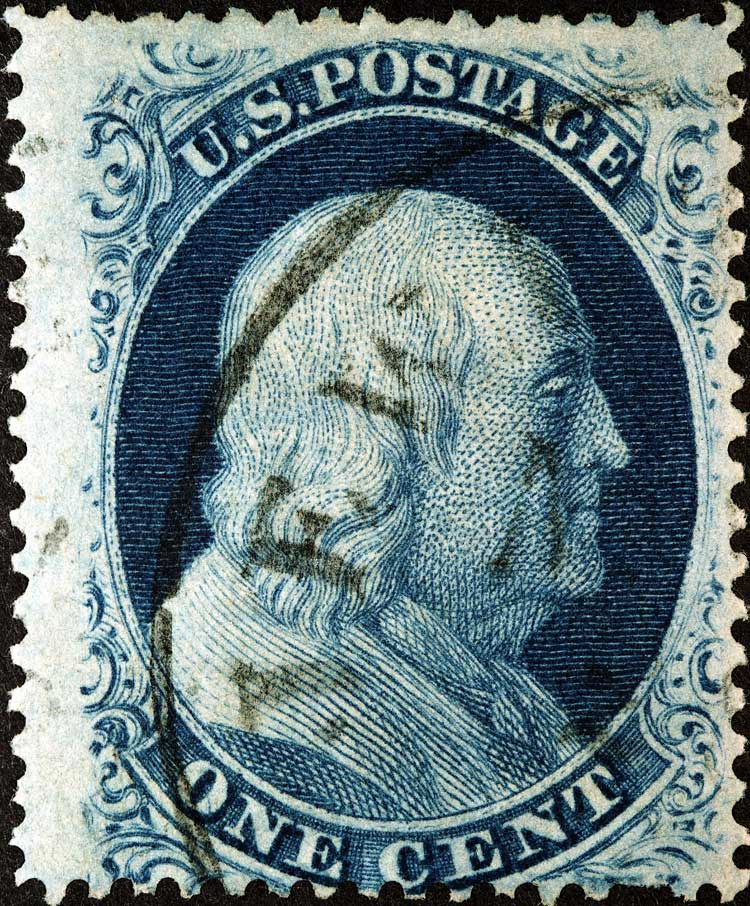
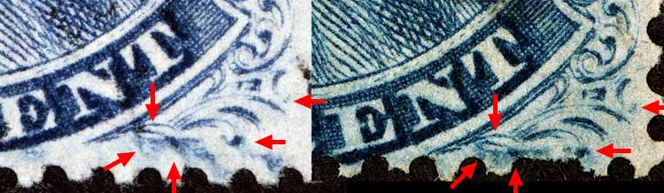
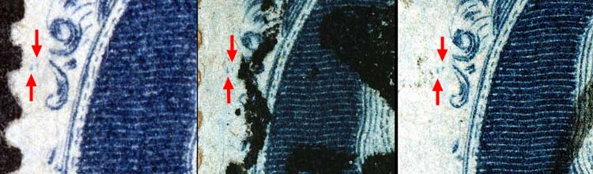
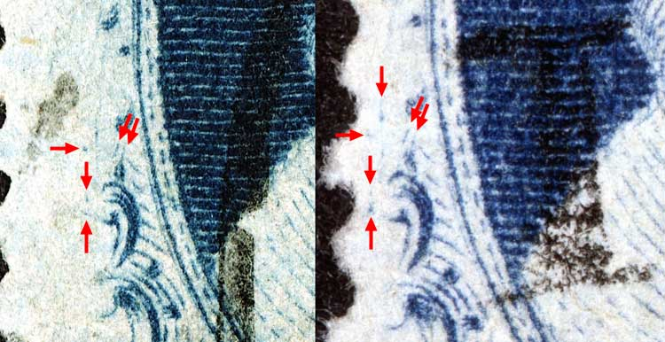
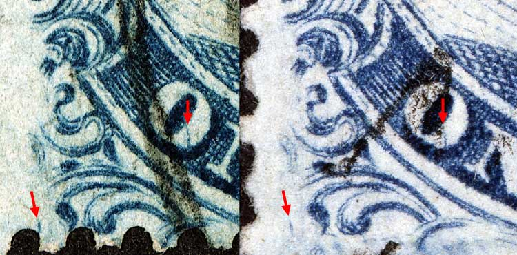
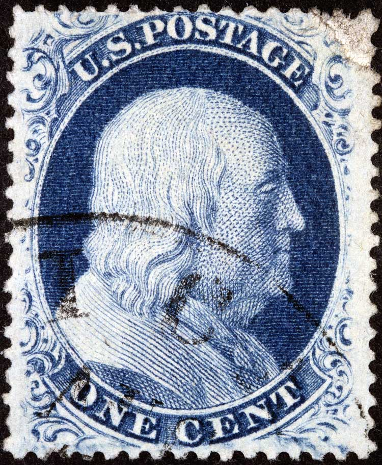

|
|
| Scott #24 Blue, Type V, Relief E Issued only perforated. PLATING NOTES: Close examination of multiple copies of this position reveal many other plating marks and fine plate scratches. |
|  |
| Figure 1. (Below) The deep blur of color below and crossing to the right of the right scroll. This is the most significant plating mark illustrated in the Neinken plating diagrams, but closer examination will reveal many other plating marks show here as consistent in the images below.
 |
| Figure 2. (Below) Two strong dots of color to the left of Ornament D. These are not illustrated in the Neinken plating diagram.
 |
| Figure 3. (Below) Multiple plating marks to the left and above Ornament E. These are not illustrated in the Neinken plating diagram.
 |
| Figure 4. (Below) A small left leaning dash of color in the left plume as illustrated in the Neinken plating diagram. More notable is the strong vertical plating mark in the O of ONE. This mark fooled the archivist into thinking that this was Position 57L5. The vertical line of color in the O of ONE is not illustrated in the Neinken plating diagram.
 |
| Figure 5. (Below) Courtesy of Frank Mastroeni  |
DISCLAIMER and COPYRIGHT INFORMATION: Thanks for visiting this site. I hope you learn something new as we are making new discoveries all the time. You, the visitor, have my permission to link to my pages and to share the INFORMATION with others. The images themselves fall under the fair use guidelines established by the United States Congress and Copyright law. Basically contact us before using. I also ask in return that you send me an e-mail if I have made a mistake, or have made some other technical blunder that in my rush to put these pages up would cause the visitor confusion. Please also visit my other website at www.slingshotvenus.com. and support the live music arts. While your there, be sure to purchase our music. There are not many philatelic rock stars around and we need all the help we can get. :-) I can be reached at: nerdman@ix.netcom.com Update 2.12.2012 |